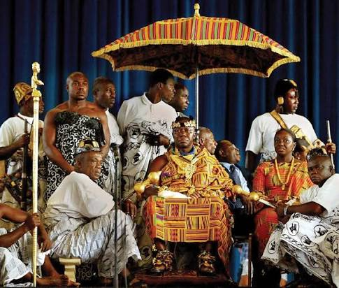

Akan culture is a rich West African heritage centered primarily in Ghana and parts of Ivory Coast, defined by matrilineal descent, intricate gold artistry, and powerful traditional leadership. Major subgroups include the Asante, Fante, and Bono.
Clans: Lineage, property inheritance, and royal succession are traced strictly through the mother's family line (abusua).
Queen Mothers (Ohemmaa): Female leaders who hold equal political weight to male chiefs, possessing the final authority in choosing or deposing kings.
The Stool: Sacred wooden seats that embody the soul and spiritual unity of a lineage or kingdom, such as the Golden Stool of the Asante.

Kente Cloth: Handwoven, brightly colored silk and cotton fabric historically worn by royalty during important life events and ceremonies.
Symbols: Visual stamps representing distinct philosophical concepts, proverbs, and historical maxims.
Tales: Popular folklore featuring Kwaku Ananse, a trickster spider who represents wisdom, survival, and cunning.